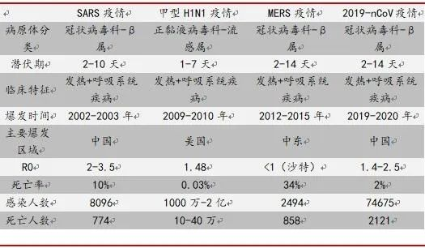
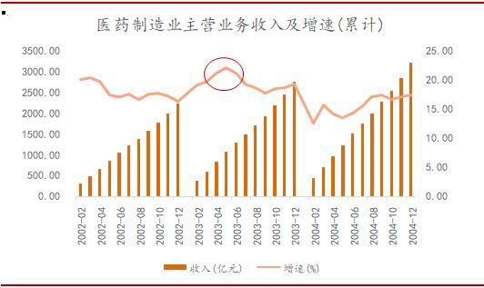
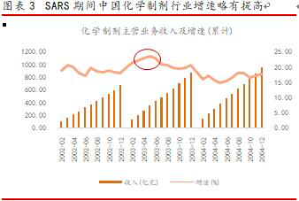
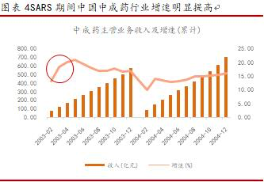
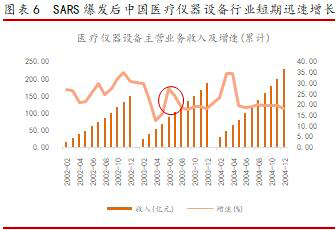
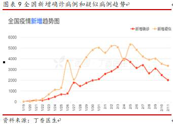
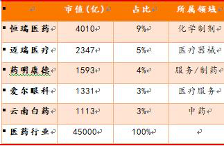
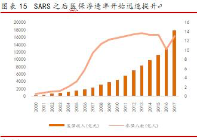
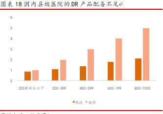
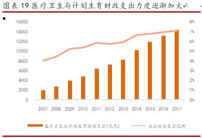

新冠疫情将推进医药行业哪些发展变革？
原文链接 备份链接 短期而言，与疫情相关的OTC中药、家用和医用设备耗材以及潜在特效药的临床进展会加快发展；长期来看，医药行业可能受疫情催化迎来新的变革，财政对于公共卫生领域的投入力度可能加大 文/李湛 刘亚洲 编辑/郝洲 无论是病原体本 …

短期而言，与疫情相关的OTC中药、家用和医用设备耗材以及潜在特效药的临床进展会加快发展；长期来看，医药行业可能受疫情催化迎来新的变革，财政对于公告卫生领域的投入力度可能加大。
本文 9431字，阅读全文约13分钟

图/pixabay
文/李湛 刘亚洲 编辑/郝洲
无论是病原体本身、疾病的临床表现还是疫情特点，甚至政府、企业和公众的应对方案，此次武汉新型冠状病毒肺炎疫情与2003年的SARS疫情均有一定相似性。
SARS和2019-nCoV同属于冠状病毒β属，具有空气传播和人传人的特点，都在临床引起非常严重的呼吸系统疾病，后来也均发展成为举国抗击的严重疫情，并最终对宏观经济造成了一定的负面影响。SARS病例最早在2002年11月出现于广东，但前期疫情并未被重视，直至2003年3月疫情蔓延至北京、WHO发布全球警报，SARS疫情才真正进入公众视野。随着疫情的爆发，政府于2003年4月中下旬开始采取了多项紧急措施，最终疫情自5月中下旬开始逐渐消退。
现有的事实表明，2019年底，武汉市开始出现新型冠状病毒肺炎病例，2020年1月20日左右疫情开始暴发并进入公众视野。各级政府自1月下旬起开始采取多项紧急措施，目前新冠肺炎疫情的拐点正逐渐出现。

图表1新型冠状病毒肺炎疫情与过去几次疫情的对比
资料来源：公开信息，数据截至2020.2.20
1. 2003-SARS疫情回顾与2019-nCoV疫情研判
1.1.SARS对于医药生物行业发展的影响
在SARS疫情的全面爆发阶段(2003年4月-5月)，我国医药制造业主营业务收入增速出现一定提高，其中2003年5月的累计增速达到22%，为2002-2004年间的最高峰。但疫情结束之后，行业增速逐渐回归并趋于稳定。

图表2 SARS期间中国医药制造业增速略有提高
资料来源：Wind
在SARS疫情爆发的2003年，国内医药行业内部以中药、生物制品、化学原料药和化学制剂为主。以资本市场为例，彼时这四个子行业的市值分别占医药行业总市值的32%、21%、15%和7%，而医疗器械、医疗服务等领域鲜有上市公司；代表性龙头公司如哈药股份、华北制药、白云山、华润三九和同仁堂等也均属于中药或化学原料药企业。
再加上当时中国刚加入WTO不久，许多外资医药企业还没有在中国真正大跨步发展，所以国内医药工业在临床上仍相当依靠传统中药，化学药的特点则是多而不精，疗效确切、质量过硬的化学药非常稀缺，且所谓的“西药”仍以相对低端的原料药为主，医疗器械等工业产品更是尚处于早期摸索阶段。
因此，在此期间，中成药和化学制剂为主的临床终端应用的医药制造领域均受到正面刺激，呈现与行业整体相似的表现，即短期增长受到一定刺激作用，但疫情过后基本就回归全年增速，其中中药的提振效应最为明显；而原料药等与临床使用相对较远的产业链的波动则相对较小；对于卫生材料和医疗器械等行业来说，影响相对滞后，不过更可能是一个行业中长期成长发展的刺激因素。

图表3 SARS期间中国化学制剂行业增速略有提高
资料来源：Wind

图表4 SARS期间中国中成药行业增速明显提高
资料来源：Wind

图表5 SARS爆发后中国卫生材料行业增速稳健提高
资料来源：Wind

图表6 SARS爆发后中国医疗仪器设备行业短期迅速增长
资料来源：Wind
总之，在短期，SARS疫情对于医药行业整体的影响为正面，受制于当时的医疗和技术条件，受益子行业主要是中药等临床用药，正面影响主要体现在短期(一个季度)。而在长期，SARS疫情结束后，政府对于医疗卫生行业的投入力度明显加大，无论是国家医保、还是公共卫生体系建设，都在接下来的多年实现快速发展，甚至疫情也可能催化了新医改的出台。因此，疫情又可能是整个产业在中长期正向发展的催化剂。
1.2.SARS期间医药生物行业的市场表现
市场方面，行业整体在短期明显跑赢大盘。但站在2003年全年的视角去看，SARS对于市场整体和医药行业的影响并不大，医药行业也并没有展现出“受益行业”的特征，行业全年甚至跑输大盘。
需要注意的是，尽管SARS疫情的持续时间更长，但是其真正集中爆发、并引起举国抗疫、造成经济暂时停摆的时间段主要集中在2003年的第二季度，尤其是4月中下旬到5月中上旬。因此，无论是经济停摆、还是资本市场的交易行为的时间区间都更窄。
能够帮助我们划分SARS疫情爆发时间区间的标志性事件有：2003年4月17日中央开始采取多项紧急措施、2003年4月20日中共中央撤销北京市市长孟学农和卫生部部长张文康的党内职务、2003年4月21日国务院成立防治非典指挥部、2003年4月24日北京市中小学开始停课，经过三周左右的严密控制，在五一假期之后疫情开始出现拐点趋势，最终2003年5月22日起高三学生开始返校。
另一方面，在SARS疫情期间，A股市场也延迟一周开市。结合前文我们划分的SARS疫情爆发区间，我们认为，资本市场基本于2003年4月20日附近开始关注SARS疫情并作出剧烈反应，至交易恢复后一周的2003年5月16日就基本比较充分地反应了预期。具体而言，上证综指由4月18日的1603点下跌3.0%至5月16日的1554点，期间最大跌幅7.3%；申万医药指数在同期由1288点下跌2.7%至1252点，期间最大跌幅4.9%。

图表7 SARS爆发期间市场反应比较剧烈，医药股短期受益明显
资料来源：Wind
在行业内部，2003年SARS爆发时，A股医药行业的上市公司仅96家，总市值约2600亿元，且如上所述主要分布于中药、化学原料药、生物制品以及化学制剂四个子行业。
站在一年的中期维度来看，四个子行业基本与医药行业一致，既没有展现出相对大盘的相对收益，也没有获得绝对收益；站在SARS爆发区间的短期维度来看，在2003年4月18日-2003年5月16日期间，四个子行业跌幅极为有限，不过明显跑赢大盘，子行业内部差异并不大。

图表8 SARS爆发期间医药行业各子板块市场表现相对平稳
资料来源：Wind
1.3.2019-nCoV疫情的进展与判断
引起此次新型冠状病毒的2019-nCoV与SARS一样属于冠状病毒β属，二者不仅在基因型等生物学特征上有一定相似性，在流行病学等方面也有诸多可比之处。不过如第一部分所言，2019-nCoV的传染性更强、但是重症率和死亡率目前来看并不高，卫健委数据显示新冠肺炎的重症率低于20%、死亡率约2%、治愈率已经超过10%，而且非湖北地区的重症率和死亡率更低、治愈率更高。截至2020年2月20日，2019-nCoV疫情已确诊患者超4万人，是SARS疫情最终确诊患者数量的5倍；死亡患者1115人，略高于SARS疫情。
另一方面，2019-nCoV疫情的拐点可能已经逐渐出现。目前新冠肺炎的新增确诊病例和新增疑似病例均已经连续下滑，且分别自2020年2月4日和2020年2月5日起，新增确诊病例和新增疑似病例的人数开始螺旋下降；其中，非湖北地区的新增确诊病例已经连续8天下降。目前来看，春节假期延长三天、各地区推迟复工1-2周以及部分地区的“封城、封村、封路”的措施确实对抑制疫情的发展起了重要作用。

图表9全国新增确诊病例和疑似病例趋势
资料来源：丁香医生

图表10各地区新增病例趋势
资料来源：丁香医生
如果当前疫情的进展方向能够延续，那么国内此次新冠肺炎疫情的持续时间大概率远低于SARS，暴发时间区间大概率在1月20日-2月20日附近，也明显低于SARS。

图表112019-nCoV疫情与2003-SARS疫情的对比
资料来源：公开资料整理
2.2019-nCoV疫情对医药行业的影响
2.1医药行业自身的变化
从2003年到2020年，中国的医药行业本身已经发生了天翻地覆的变化，因此一次疫情对行业的影响自然也与不同历史时期的环境紧密相关。
SARS疫情期间，中国的医药行业整体仍处于野蛮生长的阶段，行业规模不大，但是成长性更高，国内整体的医药环境是缺医少药。2003年国内医药卫生支出约6584亿元，同比增长14%，其中医药制造业的主营业务收入约2750亿元，当年累计增速19%，贡献最大的子行业分别是化学制剂(873亿元)、化学原料药(760亿元)、中药(751亿元)和生物制品(223亿)。
新冠肺炎期间，中国的医药行业已经发生了翻天覆地的变化，行业体量一跃成为世界前列。同时，尽管行业整体增速开始下降，但子领域的丰富性大大增加、医药行业的产业属性逐渐从制造业走向科技和消费，不过整体依旧存在大而不强的问题。2018年国内医药卫生支出约59122亿元，同比增长12%，估计医药工业板块收入约25000亿元，其中贡献最大的子行业主要是化学药(12000亿)、中药(8000亿)、医疗器械(5500亿)和生物制品(2000亿)。
A股市场医药行业的变化也与上述描述相吻合。从2003年到2020年，A股医药行业的上市公司从96家扩容至320家，行业总市值从2600亿增至45000亿，市值贡献最大的三个子行业从中药、生物制品和原料药转变为化学制剂、医疗器械和中药，同时也涌现出了一批此前没有的医疗服务、医药商业等公司。

图表12 2003年A股医药行业市值前5公司
资料来源：Wind

图表13 2020年A股医药行业市值前5公司
资料来源：Wind
行业体量与结构变化的背后是临床诊断、治疗和用药有了更多的储备和选择，医疗体系对抗疫情的砝码较2003年迅速增加、更加科学有效的预防和治疗手段逐渐普及。比如，2003年SARS期间，医生能够使用的检测确诊手段极为有限，民众多以板蓝根、白醋等产品作为预防乃至治疗手段，但是2020年nCoV期间，病毒测序、影像分析、核酸检测已经能够快速诊断病情，虽然针对新型病毒仍没有特效药，但是多年的发展下，医药行业已经能够在短期迅速提供比较丰富的可选治疗产品。
除了行业体量和结构发生了很大变化，行业的运行逻辑也发生了重大变化。
2003年国内的基本医疗需求都远未被满足，医保基金仅覆盖了1亿城镇职工，在国内医疗需求一直旺盛的情况下，主要依靠个人实现支付和研发能力落后甚至很少研发创新的工业企业完成供给。
在2003年SARS疫情爆发之后，中国改革开放后医疗卫生体系建设不足的弊端开始暴露，政府投入力度开始加大，新医改成为社会各界非常关注的议题，结果就是在此后很长一段时间里，政府卫生支出迅速增长、居民医保覆盖率持续提高、医改方向由“市场化”转为“非市场化”。因此，彼时行业的中长期逻辑就是新医改下支付端的扩容红利，而医药工业则凭借市场化和产业化的优势迎来了优于医疗服务的发展机遇。

图表14 SARS之后政府在医药卫生支出的比重开始加大
资料来源：Wind

图表15 SARS之后医保渗透率开始迅速提升
资料来源：Wind
2020年的中国医药行业仍以满足内需为主，但是医保基金已经基本实现了14亿人的全覆盖，政府卫生支出也已经成为医药卫生支出的主力。
同时，医保控费、支付扩容红利消失，行业迎来了结构性调整：医疗服务的价值逐渐被重视，医药工业整体则受制于价格管控增速持续下降。在医疗服务环节，医疗资源尤其是优质医疗资源的供求矛盾依旧非常突出，社会办医、分级诊疗、互联网诊疗成为新的趋势；在制造业内部，创新、疗效、经济成为新的竞争要素，转型创新、结构调整成为此时的核心逻辑。
2.2疫情对于医药行业的短期影响
短期来看，与肺炎疫情无关的医疗服务被抑制、医药工业的生产经营活动也被抑制。但是与消费等行业不同的是，春节期间一直是医疗服务就诊、医药工业企业生产经营的淡季，因此我们认为疫情的负面冲击并不大，仅为短期影响，且由于医疗服务本身的刚需特点，多数慢性病的就诊可能只是被推迟1-2个月，并不会被抑制。
对于与疫情相关的部分工业企业而言，短期需求确实出现明显增长，但是对各子行业及企业的影响依然要看具体产品的研发进展、临床效果以及供给情况，目前主要涉及药品、器械诊断和医用防护三大类产品。
首先是药品领域。
目前针对疫情并无特效药，不过根据《新型冠状病毒肺炎诊疗指南》和疾病本身的特点，一些广谱抗病毒药、抗生素、中药和生物制品等可能会在临床得到较多使用，因此可能受益。
抗病毒药方面，瑞德西韦凭借其结构特征、体外研究以及部分国外的临床应用，成为医学界最期待的一款产品，目前已经通过各种快速通道进入临床三期试验，预计4月下旬完成临床研究。不过由于疫情的急迫性，不排除瑞德西韦在初步临床结果能够证实其安全性和有效性的基础上通过同情用药等方案实现快速应用。
除瑞德西韦外，洛匹那韦/利托纳韦、α干扰素、阿比朵尔、法匹拉韦等已上市的药物均在体外显示了抗新型冠状病毒活性，因此尽管其都没有完成临床研究或还没有进行临床研究，但也都有望在临床中获得较广泛的使用。
尽管指南已经明确避免不合理使用抗生素，但是许多患者都为中老年人，很容易出现继发性的细菌感染，因此疫情期间抗生素的用量增长是大概率事件。不过，由于疫情主要集中于湖北地区，而且很多慢性病的就诊需求已经被压制导致其他科室对抗生素的需求量下降，所以抗生素整体的销售表现还存在不确定性。
由于缺少特效药，指南里也推荐了中药和激素的治疗方案：对于轻症患者，指南推荐了莲花清瘟、藿香正气、金花清感等中成药和中药饮片，对于中重症患者，指南提及必要时可以使用甲泼尼龙和血必净注射液、喜炎平注射液等以辅助治疗。对于OTC中成药来说，由于其针对轻重症和疑似病例可能具备一定的治疗作用，且常见于药店等To C端渠道，我们认为在短期缺乏特效药的情况下，“抢购双黄连”在短期确实可能存在，因此部分OTC中成药的短期消费量可能有比较明显的增长。

图表16疫情相关药品及对应公司
资料来源：《新型冠状病毒感染肺炎诊疗指南》
疫苗是另一个公众关心的焦点。但是疫苗研发周期较长，根据最近的疫情进展，我们认为最终新冠疫苗研发成功后可能已经不太拥有市场，只能用作储备。不过，此次疫情有可能会提高公众对于流感疫苗等二类苗的接种热情，在中长期提高这些产品的渗透率，加速行业成长。
其次是器械与诊断领域。
检测诊断是疫情期间最为繁忙的工作环节之一，疫情期间需求量增长最快的器械也主要是医用检测设备及试剂，目前主要的诊断环节有常规检测、影像检测和核酸检测等。
常规检测是医学检验的基本环节，主要就是检测白细胞数量、肌红蛋白等，使用的仪器有血球分析仪等，由于常规检测总次数很高，再考虑到疫情对于其他科室就诊的负面冲击，估计此次疫情带来的弹性并不大。
影像检测既用于疑似病例肺部的初步诊断，也用于确诊患者和中重症患者的病情管理，其主要设备就是DR、CT等。目前全国DR年销量约1.5万台，由于DR等大型设备存在采购和安装时间以及较长的使用寿命，因此疫情在短期可能并不会催生太多医院新的采购需求，但是预计此次疫情将使得县级医院就诊能力落后的问题进一步暴露，分级诊疗方针进一步落实，则将有利于DR等医疗设备在中长期向基层医疗机构渗透。

图表17近年来国内的DR年销量
资料来源：中国产业信息网

图表18国内县级医院的DR产品配备不足
资料来源：健康资讯
核酸检测主要用于疑似病例的排查参考。目前，国内已经有多家企业和机构研发并生产出来新冠肺炎的核酸检测试剂盒，基本能够满足临床的检测需求。由于核酸检测主要用于疑似病例的排查参考、试剂盒本身单价不高，预计其增量弹性不大。
除了检测诊断，在临床治疗过程中，监护仪、呼吸机、制氧机等产品的需求在短期会出现较快增长，基层医疗机构对上述器械产品的采购有望贡献明显增量。而且，呼吸机、制氧机等具备消费属性的器械产品有望借此次疫情进一步拓展院外市场。
最后是医用防护产品。
此次疫情中，供求矛盾最突出的可能是口罩等医用防护产品。根据WHO，目前中国口罩年产量约45亿只，占全球的一半，且以出口为主，但是当前形势下全球需求量已增长至往年的100倍。尽管供需极度失衡，但是由于产能约束和价格管控，医用防护产品的增长幅度有限，且春节期间用工成本、上游原材料成本的上涨，行业盈利能力反而可能出现一定下滑。
不过中长期看，尽管中国早已是医用敷料的生产大国，但是医用防护等医用敷料产品的渗透率并不高，目前行业需求仍主要来源于欧美等发达国家。BMI数据显示，2016年中国医用敷料行业仅占全球的8%，此次疫情有望提高医疗机构和公众对于医用防护产品的重视力度。
2.3疫情对于医药行业的中长期影响
如前文所述，SARS疫情对于医药行业短期的影响主要集中在1个季度，且主要是对工业产品和医疗服务的供求造成干扰。但长期而言，SARS疫情作为一个催化剂，暴露了当时中国公共卫生领域的诸多不足，也使得政府和社会各界开始反思公共卫生体系的漏洞和改革开放以来医疗保障体系建设的不足，新医改由此孕育而生，医疗卫生等领域的改革不再仅仅是经济建设的配套工作，而是成为“科学发展”下的重要组成。医药行业自2003年之后开始步入远高于GDP增长的黄金成长期，主要就是因为政府加大公共卫生体系和医疗保障体系的建设，医保扩容、医药渗透率提高使得行业步入快速发展期。
而在此次新型冠状病毒肺炎爆发期间，中国的医疗体系也暴露了一些不足：比如医疗资源供给有限、基层医疗建设不足，公共卫生体系建设有待加强、物资储备不够以及新药研发水平比较落后等，而与这些矛盾相对应的改革也有望加速推进、并催生出更多新业态，对行业的长期发展造成深远影响。
首先是医疗资源供需的矛盾。
此次疫情主要爆发在医疗基础设施相对发达、医疗资源供给相对充分的武汉，但是疫情爆发后，医疗资源供给不足的现象依然非常突出。根据国家卫健委，目前已经有超2万名医护人员的医疗队伍支援湖北和武汉，而湖北省的注册医护人员总数约30万，武汉市估计不到8万，可见国内医疗资源的供给依然不足。而且，国内基层医疗建设不够完善，三级医院人满为患早已经成为常态，因此在疫情爆发时供求矛盾就会彻底暴露。
目前解决医疗资源供给不足的方案主要是加大基层医疗设施的建设，推进分级诊疗。总体而言，分级诊疗在全国的进度依旧缓慢，主要也是因为基层设施建设力度不够。不过此次疫情可能成为加快推进分级诊疗的催化剂，近日政治局常务委员会会议也明确指出，“要聚焦攻克脱贫攻坚战最后堡垒，结合推进乡村振兴战略，以疫情防治为切入点，加强乡村人居环境整治和公共卫生体系建设” 。而我们认为，在加大基层医疗设施建设、推进分级诊疗的过程中，最大受益方可能就是必备的医疗器械企业。
互联网医疗则可能从市场化角度自下而上加速这一进程。
此次疫情中，互联网医疗成为疏解医疗机构供给压力的重要渠道。一方面是各地多家医院通过互联网提供医疗服务，解决部分常见病、慢性病的诊疗压力；另一方面，阿里健康、春雨医生、腾讯健康、平安好医生、丁香园等多个互联网医疗平台向患者和普通民众提供在线问诊、宣传防疫、跟踪疫情等服务，缓解了实体医疗机构的压力和交叉感染的问题。
事实上，国内的互联网医疗行业近年来一直在快速发展。仅2019年，国务院、国家卫健委、国家医保局等多个部门就出台了多项鼓励互联网医疗发展的文件措施；科技的快速进步也使互联网医疗能够突破传统“问诊”的局限，在线会诊甚至精密手术等复杂的诊疗活动都在逐渐成为现实。我们认为，互联网医疗在此次疫情中的表现有望从政策支持、消费者接受程度等多个维度给行业带来革命性的变化。
其次是公共卫生体系建设的不足。
尽管我国的医疗卫生与计划生育财政支出力度逐年加大，但是公共卫生领域的投入力度仍有很大不足。过去多年，财政在医药卫生领域的支出主要体现在医保覆盖面的扩大，而公共卫生体系建设乃至医院等医疗机构体系的建设力度都还不够。因此，新冠肺炎爆发后，我国的医改方向可能会侧重于解决这一问题，公共卫生和医疗机构的投资力度有望加大，医用口罩等新的战略储备物资的采购量也有望提高。

图表19医疗卫生与计划生育财政支出力度逐渐加大
资料来源：Wind

图表20 医疗财政支出中公共卫生投入力度不够(亿元)
资料来源：Wind
对于医疗机构而言，公共卫生体系建设中的重要一环是院内的感染控制，院内感染也一直是医疗机构的难题。无论是SARS疫情，还是此次新冠肺炎疫情，院内感染均造成了许多医护人员的感染甚至死亡，在SARS疫情之后，院内感染开始逐渐得到重视和控制，但是力度依然不够。据2017年的“mrsa院内感染诊治策略会议”，目前中国院内感染的发生率约8%，每例院内感染患者的住院时间平均延长14天，全国每年因此直接损失超过150亿元。因此，我们认为，此次疫情有望催使医疗机构加大院内感染防控力度，消毒液、防护服、医用口罩等的采购需求可能迎来一个长期拐点，智能手术机器人等高端设备也可能因此逐渐被医疗机构重视和使用。
对于普通居民而言，此次疫情将带来公共卫生预防观念和医学科普的快速提升。在疫情期间，公众对于防护口罩、手套、消毒用品以及医学科普知识的需求激增，更重要的是，公众的预防观念和对健康的重视程度可能因此得到迅速提高，未来这类产品和服务有望长期维持较高的需求水平。我们认为，疫情对于家用防护及器械产品、医学科普和在线问诊咨询的影响可能是深远的。
最后是新药研发水平低下的现状。
此次疫情下，另一个突出的矛盾是公众对于临床特效药和疫苗的需求和企业对产品的研发能力和速度不匹配。一方面是因为新型冠状病毒本身是一种新型病毒，确实难以快速研制出有效的产品；但另一方面，此次疫情也反映出国内医药工业领域的落后，目前几个潜在的特效药均来自国外药企，国内对于新药研发的储备还远远不够。
近年来，药监局等政府部门一直在改革审评审批机制，加快创新产品的上市速度，在此次疫情期间，多个潜在特效药的临床审批等也纷纷创造最快纪录。我们认为，政策会进一步鼓励创新，提高企业对于研发社会亟需新药的热情，在工业领域，“创新”的地位会进一步加强，行业主线依然是医保控费下的结构调整。
3.市场展望
自1月20日至2月20日，医药行业上涨2.47%，同期沪深300指数下跌3.21%，医药行业整体及各细分子领域均大幅跑赢大盘。结合前文对于疫情爆发区间的判断，我们认为资本市场的短期波动基本步入尾声。

图表21 年初至今申万医药行业大幅跑赢大盘
资料来源：Wind

图表22 年初至今申万医药各子行业表现
资料来源：Wind
当前行业估值约40倍PE-TTM，相对沪深300的溢价率约241%，均处于2019年以来的高位和2016年以来的中高位水平。
短期而言，与疫情相关的OTC中药、家用和医用设备耗材以及潜在特效药的临床进展会加快发展；此外，由于新冠疫情，上半年的医保支出压力可能加大、为了降低中小企业负担，医保收入在短期也有所下降，不排除后续医保加大控费力度，重视药品和耗材的带量采购政策变化。
长期来看，医药行业可能受疫情催化迎来新的变革，财政对于公告卫生领域的投入力度可能加大。我们预计制造业仍以医保控费、结构调整、创新驱动为主线，符合行业长期发展方向的创新药龙头企业，转型创新的传统药企，产品受益于分级诊疗实现快速成长的医疗器械企业；在医疗服务领域，公共卫生、分级诊疗以及互联网医疗的建设有望迎来明显突破，医疗机构和居民的防护意识得到增强，互联网医疗平台企业和医用防护产品企业会获得市场青睐。
（作者李湛为中山证券首席经济学家、刘亚洲为中山证券助理研究员）

系列报道
◤活粒为《财经》杂志 科技与健康团队 的新媒体项目，坚持独立、独家、独到，合作／爆料请联系：yingxin@caijing.com.cn◢

《财经》旗下健康领域深度报道专栏
扫一扫：

原文链接 备份链接 短期而言，与疫情相关的OTC中药、家用和医用设备耗材以及潜在特效药的临床进展会加快发展；长期来看，医药行业可能受疫情催化迎来新的变革，财政对于公共卫生领域的投入力度可能加大 文/李湛 刘亚洲 编辑/郝洲 无论是病原体本 …
原文链接 备份链接 国内疫情形势逐渐好转，在线医疗机构们到底能否经受住“后疫情时代”的挑战？ 文 | 徐徜徉 编辑 | 朱弢 空格 2020年初，一场新冠肺炎疫情将医疗行业推向了“风口浪尖”。 在湖北及全国各地的医院内，数万名医务人员奋战 …
原文链接 备份链接 以下文章来源于出行一客 ，作者施智梁团队 [出行一客 《财经》杂志交通工业组创建，专注于交通出行领域新闻。在这里，我们将带你联结出行、科技与未来。](#) 全球车企开始联盟整合，中国几十上百家汽车制造企业的局面将被打 …
原文链接 备份链接 与2003年非典爆发相比，本次疫情的公共卫生应对举措更快更强，因此初期经济受影响较大，但随后的2季度和下半年可能复苏 摄图/黎立 文 | 邢自强 鼠年伊始，春节假期出人意料漫长，此间心情却异乎寻常复杂。新冠肺炎来势汹 …
原文链接 备份链接 燃财经（ID:rancaijing）原创 作者 | 苏琦 编辑 | 魏佳 “活下来是第一要务。”光源资本创始人兼CEO郑烜乐建议创业者，在疫情之下融资要战略上积极、战术上严谨。 2月25日，燃财 …